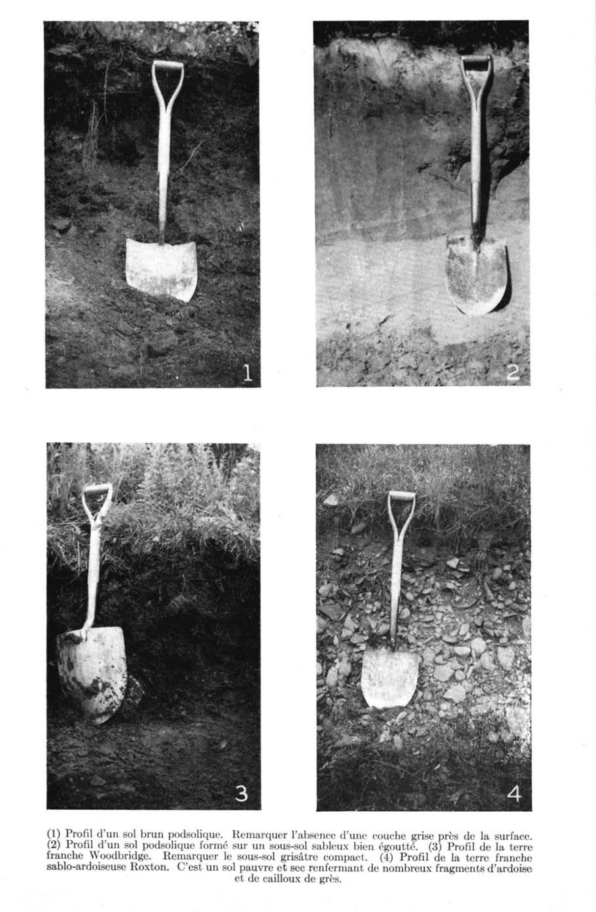

Identification & Caractéristiques Générales
La série de Roxton s'est développée sur un till basal franc sablo-argileux à sablo-graveleux, fortement influencé par la lithologie locale constituée principalement d'ardoise et de grès, avec par endroits des indices de remaniement par l'eau. Ce matériau parental morainique met en place des paysages de larges terrasses aux formes légèrement ondulées à vallonnées, ainsi que des coteaux caractéristiques des zones de piémont. La topographie locale génère des pentes variées qui influencent directement le cheminement des eaux de surface et l'organisation générale du modelé agronomique.
Sur le plan morphologique et hydropédologique, le profil présente un drainage naturel généralement bon à excessif, favorisant un assèchement rapide de la matrice pédologique. La texture dominante est de type loam sablo-graveleux à sablo-argileux, fréquemment caractérisée par une pierrosité prononcée en surface ainsi que par la présence d'affleurements rocheux locaux. Le profil se distingue par une forte réaction acide, consécutive à la nature pétrographique siliceuse des matériaux d'origine combinée à un lessivage intense, tandis que le taux de matière organique demeure globalement faible.
Les aptitudes agronomiques des sols de la série de Roxton sont limitées par leur pierrosité, leur propension à la sécheresse estivale et leur acidité prononcée. Les superficies défrichées sont affectées aux grandes cultures céréalières et aux prairies fourragères, bien que les rendements y soient variables. La mise en valeur optimale de ces sols requiert des interventions correctives rigoureuses, incluant des apports réguliers d'amendements calcaires pour neutraliser l'acidité, des programmes d'humification pour relever la teneur en matière organique, ainsi qu'une fertilisation minérale équilibrée. Une proportion significative de cette série demeure sous couvert forestier, dominé par l'érable, le hêtre et le bouleau.
Classification Taxonomique & Environnement Pédologique
| Ordre Pédologique | Brunisolique |
|---|---|
| Grand Groupe (SCSS) | Brunisol sombrique |
| Sous-Groupe Taxonomique | Brunisol sombrique éluvié gleyifié |
| Famille Pédologique | Loameuse-fine, mixte sableux, acide |
| Mode de Dépôt Parental | Morainique |
| Classe de Drainage Naturel | Modérément bien drainé |
| Régime Thermique & Humidité | Frais / Humide |
Description Morphologique du Profil Type
Séquences génétiques des horizons pédologiques caractérisant le profil type représentatif de la série Roxton :
Profil représentatif — Comté de Drummond
✓ Source : Comté de Drummond — Page 67Couleur Munsell : 5YR 3/3
Structure & Consistance : Finement granulée
Description morphologique : Loam sableux fortement humifère, brun rouge foncé (5 YR 3/3); structure finement granulée, moyennement développée. La réaction (pH 5.2) est fortement acide.
Couleur Munsell : 5YR 7/2
Structure & Consistance : Feuilletée
Description morphologique : Sable limoneux, gris rose (5 YR 7/2); structure feuilletée, faiblement développée; sans consistance. La réaction (pH 5.2) est fortement acide.
Couleur Munsell : 5YR 4/6
Structure & Consistance : De la partie fine est faiblement granulée
Description morphologique : Loam gravelo-caillouteux, rouge jaune (5 YR 4/6). Le gravier et les cailloux sont déposés pêle-mêle. La structure de la partie fine est faiblement granulée; ouvert. La réaction (pH 5.4) est fortement acide.
Couleur Munsell : 7.5YR 5/8
Structure & Consistance : De la partie fine est faiblement granulée
Description morphologique : Loam gravelo-caillouteux, brun vif (7.5 YR 5/8). Le gravier et les cailloux sont déposés pêle-mêle; la structure de la partie fine est faiblement granulée. La réaction (pH 5.5) est fortement acide.
Couleur Munsell : 7.5YR 6/8
Structure & Consistance : Polyédrique à granulaire
Description morphologique : Gravier, jaune rouge (7.5 YR 6/8); sans structure, ni consistance. La réaction (pH 6.0) est moyennement acide.
Profil représentatif — Comté de Drummond
✓ Source : Comté de Drummond — Page 68Couleur Munsell : Non précisée
Structure & Consistance : Polyédrique à granulaire
Description morphologique : Litière de feuilles mortes et de débris végétaux.
Couleur Munsell : 5YR 3/4, 5YR 2/1
Structure & Consistance : Très finement granulée
Description morphologique : Matière organique peu décomposée, gris très foncé (5 YR 3/4) à l'état sec, devenant noir (5 YR 2/1) à l'état humide; structure très finement granulée; friable. La réaction (pH 4.9) est très fortement acide.
Couleur Munsell : 10YR 8/2, 10YR 6/2
Structure & Consistance : Polyédrique à granulaire
Description morphologique : Loam sableux, blanc (10 YR 8/2) à l'état sec, devenant gris brun clair (10 YR 6/2) à l'état humide; sans structure, ni consistance. La réaction (pH 5.1) est fortement acide.
Couleur Munsell : 10YR 5/8, 10YR 4/4
Structure & Consistance : Finement granulée
Description morphologique : Loam sablo-graveleux, brun jaune (10 YR 5/8) à l'état sec, brun jaune foncé (10 YR 4/4) à l'état humide; structure finement granulée, légèrement développée; consistance friable à l'état sec mais collante à l'état humide; présence de grès jaune et de quelques schistes rouges. La réaction (pH 5.1) est fortement acide.
Couleur Munsell : 2.5Y 7/6, 10YR 5/8
Structure & Consistance : Finement granulée
Description morphologique : Loam sablo-graveleux, jaune (2.5 Y 7/6) à l'état sec, brun jaune (10 YR 5/8) à l'état humide; petites taches de rouille; structure finement granulée, peu développée; friable à l'état sec mais collant à l'état humide; présence de grès jaunes et de quelques schistes rouges. La réaction (pH 5.5) est fortement acide.
Couleur Munsell : 2.5Y 7/4, 2.5Y 4/4
Structure & Consistance : Polyédrique à granulaire
Description morphologique : Loam sablo-graveleux, jaune pâle (2.5 Y 7/4) à l'état sec, olive (2.5 Y 4/4) à l'état humide; consistance ferme, parfois compacte. La réaction (pH 5.6) est moyennement acide.
Profil représentatif — Comté de Bagot
✓ Source : Comté de Bagot — Page 117Couleur Munsell : Non précisée
Structure & Consistance : Polyédrique à granulaire
Description morphologique : Horizon composé de feuilles et de débris de plantes. pH 5.0
Couleur Munsell : Non précisée
Structure & Consistance : Polyédrique à granulaire
Description morphologique : Traces ou absent.
Couleur Munsell : 7.5YR 5/2
Structure & Consistance : Polyédrique à granulaire
Description morphologique : Loam graveleux brun (7.5YR 5/2), granuleux et friable. Beaucoup de gravier (ardoise et grès). pH 4.9
Couleur Munsell : 10YR 5/4
Structure & Consistance : Polyédrique à granulaire
Description morphologique : Loam graveleux brun jaunâtre (10YR 5/4). Beaucoup de gravier (ardoise et grès). pH 5.0
Couleur Munsell : 10YR 6/2
Structure & Consistance : Polyédrique à granulaire
Description morphologique : Till. Loam sablo-graveleux gris-brun clair (10YR 6/2). Très graveleux. Ouvert. Roc parfois rapproché. pH 5.2
Profils Photographiques & Planches de Terrain
Documents iconographiques, figures pédologiques et coupes de terrain documentées dans les mémoires d'inventaire pour de la série Roxton :

Propriétés Physico-Chimiques & Analyses de Laboratoire
| Horizon | Prof. (pces/cm) | Sable % | Limon % | Argile % | pH | C % | N % | Ca éch. | Mg éch. | K éch. | H+ éch. | Bases tot. | C.E.C. (meq/100g) | Saturation % | ||||
|---|---|---|---|---|---|---|---|---|---|---|---|---|---|---|---|---|---|---|
| 0 à 5 | Ac | 42 | 65 | 8 | 17 | 14 | 13 | 13 | 26 | 9 | 1.6 | 9.4 | 6.7 | 3.90 | 0.27 | 14.4 | 5.1 | 10,200 |
| 5 à 12 | B21 | 25 | 68 | 6 | 16 | 17 | 16 | 13 | 23 | 9 | 1.0 | 3.9 | 1.8 | 1.06 | 0.08 | 13.2 | 5.2 | 4,600 |
| 11 à 28 | B22 | 39 | 72 | 8 | 20 | 18 | 16 | 10 | 19 | 9 | 1.0 | 4.0 | 1.6 | 0.92 | 0.08 | 11.5 | 5.1 | 5,600 |
| 28 à 34 | C1 | 42 | 90 | 18 | 31 | 23 | 12 | 6 | 7 | 3 | 0.6 | 3.2 | 1.2 | 0.68 | 0.06 | 11.3 | 5.2 | 2,800 |
| 34 et plus | C2 | 61 | 84 | 11 | 37 | 19 | 12 | 5 | 13 | 3 | 0.3 | 2.4 | 0.7 | 0.42 | 0.06 | 7.0 | 5.2 | 1,200 |
Particularités Régionales, Phases & Variantes Pédologiques
Déclinaisons régionales, faciès texturaux, phases d'érosion ou de pierrosité et variantes cartographiées par étude pour de la série Roxton :
| Étude Régionale | Symbole | Appellation / Phase / Variante | Différenciation avec la série type (Analyse pédologique) |
|---|---|---|---|
| Comté de Bagot | Rx |
Roxton loam sableux graveleux | Modalité modale de référence (type de base de la série). |
| Comté de Shefford | Rosl |
Roxton loam sableux graveleux | Conforme à la série type de référence (caractéristiques texturales et drainage identiques). |
| Comté de Drummond | Rx |
Roxton loam sableux graveleux | Conforme à la série type de référence (caractéristiques texturales et drainage identiques). |
| Comté de Rouville | RX2gbp |
Roxton loam sableux graveleux 3 à 8 % de pente légèrement à modérément pierreux | Phase légèrement à modérément pierreuse (obstruction mécanique modérée). |
RX3gbp |
Roxton loam graveleux 3 à 8 % de pente légèrement à modérément pierreux | Phase légèrement à modérément pierreuse (obstruction mécanique modérée); Faciès loameux plus fin et équilibré que le loam sableux de référence (meilleure rétention en eau et nutriments). | |
RX3gbqr |
Roxton loam graveleux 3 à 8 % de pente très pierreux légèrement à modérément rocheux | Phase très pierreuse limitant le travail aratoire et l'implantation culturale; Faciès loameux plus fin et équilibré que le loam sableux de référence (meilleure rétention en eau et nutriments). | |
| Péninsule Gaspésienne | RX |
Robidoux loam à loam limoneux argileux | Faciès plus limoneux (loam limoneux), offrant une forte rétention en eau mais vulnérable à la battance; Drainage modérément bien drainé (distinct du drainage de référence bien drainé); Sous-groupe gleyifié marqué par l'engorgement périodique (horizon Bgj). |
RXk |
Robidoux variante calcaire -18-24" (à 60 cm et moins) loam à loam limoneux argileux | Variante calcaire avec effervescence aux carbonates; Faciès plus limoneux (loam limoneux), offrant une forte rétention en eau mais vulnérable à la battance; Drainage modérément bien drainé (distinct du drainage de référence bien drainé); Sous-groupe gleyifié marqué par l'engorgement périodique (horizon Bgj). | |
RXm |
Robidoux variante roc à 50 cm ou moins loam à loam limoneux argileux | Faciès plus limoneux (loam limoneux), offrant une forte rétention en eau mais vulnérable à la battance; Drainage modérément bien drainé (distinct du drainage de référence bien drainé); Sous-groupe gleyifié marqué par l'engorgement périodique (horizon Bgj). | |
RXr |
Robidoux variante modelé du paysage accidenté loam à loam limoneux argileux | Faciès plus limoneux (loam limoneux), offrant une forte rétention en eau mais vulnérable à la battance; Drainage modérément bien drainé (distinct du drainage de référence bien drainé); Sous-groupe gleyifié marqué par l'engorgement périodique (horizon Bgj). | |
| Les sols organiques du sud-ouest | ROX |
Roxton | Drainage modérément bien drainé (distinct du drainage de référence bien drainé); Sous-groupe gleyifié marqué par l'engorgement périodique (horizon Bgj). |
Distribution Pédo-Paysagère & Représentativité Cartographique (Couverture PPS 2026)
- Pabos loam limoneux argileux à loam (PAB) — co-occurrente dans 90 polygone(s)
- Chaleurs loam limoneux argileux à loam (CHL) — co-occurrente dans 38 polygone(s)
- Beaufils loam à loam argileux (BEF) — co-occurrente dans 13 polygone(s)
Aptitudes Agronomiques, Hydropédologie & Conservation des Sols
Indicateurs Hydropédologiques & Vulnérabilité à l'Érosion (BDHP 2026)
Interprétation BDHP : Potentiel de ruissellement modérément élevé. Faible taux d'infiltration, présence d'horizons ralentissant le drainage descendant.
Classement selon l'Inventaire des Terres du Canada (ITC / CLI) : Classe 1.
- Potentiel agricole : Terroir adapté aux cultures régionales selon la texture dominante et la régie de drainage.
- Contraintes majeures : Modérément bien drainé. Risque d'engorgement temporaire ou d'excès d'eau printanier.
- Gestion & Aménagement : Drainage souterrain ou superficiel préconisé sur les terres planes. Chaulage et apport organique régulier selon les bilans agronomiques.
- Cultures adaptées : Grandes cultures (maïs, soya, céréales), prairies fourragères et cultures maraîchères selon le contexte géomorphologique.